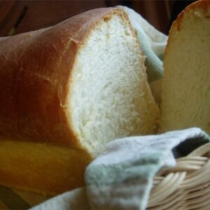

Asian Water Roux White Bread

Description
Secret to homemade bread that will stay soft for days! It might be more work than the usual white bread, but trust me, this is so worth it! Water roux works best refrigerated overnight; however, if you don't want to wait, make sure it's room temperature when you add it to the dough! The dough is quite moist to work with. It is easier to do the kneading in a mixer.
Ingredients
- ½ cup water
- 1 tablespoon white sugar
- ¼ cup butter
- 4 cups all purpose flour
- 2 ½ teaspoons active dry yeast
- ¾ cup warm water
- ⅓ cup white sugar
- 3 tablespoons instant dry milk powder
- 1 teaspoon salt
- 1 egg
- 2 teaspoons melted butter, divided
Steps
- To make the water roux, bring 1/2 cup of water to a boil in a small saucepan, and stir in 1 tablespoon of sugar and the butter, mixing to dissolve the sugar. Place 1 cup of flour in a heatproof bowl, pour the boiling liquid over the flour, and whisk it well to remove lumps and transform the flour into smooth paste. Cover the bowl with plastic wrap, and refrigerate overnight.
- The next day, bring the water roux to room temperature. In the work bowl of an electric stand mixer, stir the yeast with 3/4 cup of warm water, and let it stand until a creamy layer of foam forms on the surface, 5 to 10 minutes. Add 3 cups of flour, 1/3 cup of sugar, dry milk powder, salt, and egg. Scoop all the water roux by spoonfuls into the mixing bowl, and let the machine knead the dough on low speed to thoroughly combine the ingredients, about 2 minutes. Increase the mixer speed to medium and knead until the dough is soft and smooth, about 8 more minutes.
- Turn the dough out into a greased bowl, cover lightly with a cloth, and let rise in a warm place until doubled, about 1 hour. Punch down the dough.
- Grease 2 8x4 inch loaf pans.
- Working on a floured surface, cut the dough in half, and form each half into a loaf shape. Place the dough in the prepared loaf pans, cover lightly with a cloth, and let rise until doubled, about 1 more hour.
- Preheat an oven to 350 degrees F (175 degrees C). Bake the loaves in the preheated oven until the tops are lightly golden brown, 30 to 40 minutes. Remove the bread from the pans, and brush loaves with melted butter while still warm.
Image and recipe borrowed from allrecipes.com.